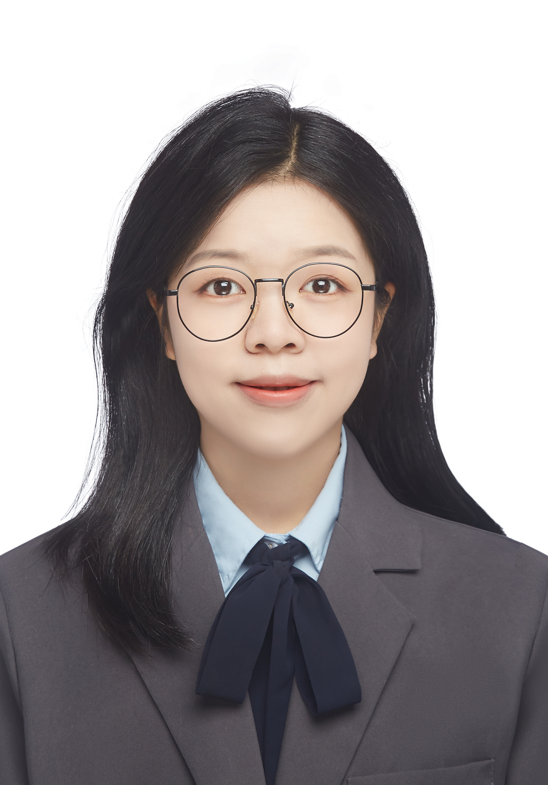

Undergrad of
CUPL
A research intern at
ICSI advised by Dr.N. Benjamin Erichson
Biosktech
I am an undergrad at SIML, CUPL.
Research interests
My research interests span IR, LLM, efficient algorithms for NLP and AI for science. I am also passionate about statistical learning.
Other current and past service roles can be found on my CV.